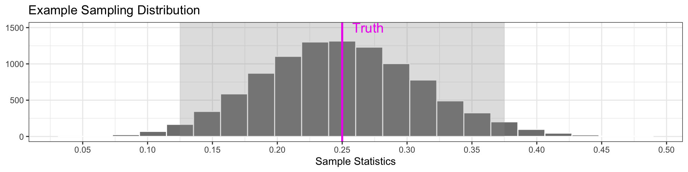

Confidence Intervals II
Megan Ayers
Stat 141 | Fall 2026
Monday, Week 9
Bootstrap Reproduction Rate
We can use our sample to create a 95% confidence interval.
- Create the bootstrap samples:
- Compute bootstrap statistics within each bootstrap sample:
- Graph the bootstrap distribution to check shape:

- Estimate the standard error
- Because the bootstrap distribution is bell-shaped, we use \(2 \times\) the estimated SE as our margin of error to create a 95% confidence interval
\[ \bar x \pm 2 \cdot SE \implies 2.06 \pm 2 \cdot 0.181 \]
Quantiles and Percentiles
By definition, 2.5% of the data is less than the .025 quantile, and 2.5% of the data is greater than the .975 quantile

- This means that 95% of the data is between the .025 and the .975 quantiles
For sampling distributions that are bell-shaped, the .025 quantile is about \(2\cdot SE\) below the mean, and the .975 quantile is about \(2\cdot SE\) above the mean
So using the .025 and .975 quantiles is roughly equivalent to forming a 95% CI as: \(\text{Statistic} \pm 2*\text{SE}\)!
The Percentile Method: Example
- Suppose we want to construct a 90% confidence interval for the reproduction rate
- Find the .05 and .95 quantiles in the bootstrap distribution.
- 90% of bootstrap sample statistics will be between these values

- Our 90% confidence interval is therefore 1.76 to 2.36